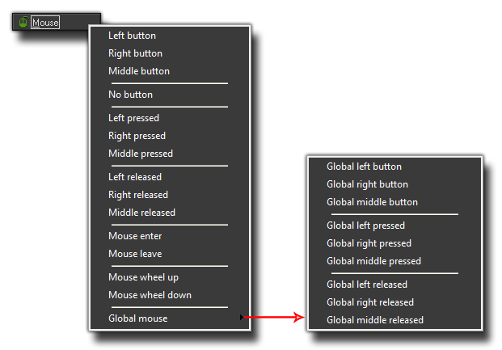

Mouse
Events
Mouse
EventsThe mouse event is separated into a series of sub events that can be selected to give you a more precise control over what is happening in your game. Here you can see exactly what these sub events are: 
The left, right and middle button events (whether normal, pressed or released) all work on the mask of the instance that has the event. What this means is that GameMaker: Studio will check the position of the mouse in the room when those buttons are used against the collision masks of the instances that have a mouse event. If there is a "collision" then the event will be triggered, so make sure than any object with these events has a sprite with a valid mask or that the object has a mask selected in the object properties. As their names imply, these events will be triggered either once when the chosen mouse button is first pressed or released, or continuously each step while the button is maintained.
The mouse enter and release events are also similar to the button events in that they too rely on the mask of the instance to work, but this time they are triggered when the mouse first "enters" (touches) the object or when the mouse "leaves" (stops touching) the object. These events are not continuous however, and are triggered only once for each time the mouse enters or leaves the object - so they are an ideal method for creating, for example, buttons that need to change as the mouse hovers over them before going back to normal when the mouse is removed.
Finally we have another section to the mouse events which is called the Global Mouse. in this sub-menu you will find a selection of events that are for generating mouse events in instances even when the mouse is not over them or even near them. These are events that are generated for all instances and if there are actions or code defined for the specified event then it will be run, regardless of the position of the mouse within the game room.
Please note that on devices (iOS and Android targets) the left mouse button can also be used to check for a finger tab on a touch screen, and the right mouse button is triggered by a double tap on the screen.